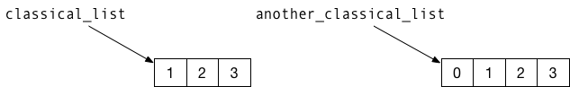
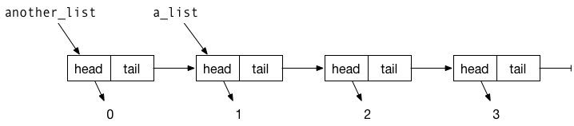

vignettes/getting-started-with-pmatch-.Rmd
The pmatch package allows you to define and match against patterns using a syntax similar to Haskell and Standard ML. In those two programming languages, you define new data types by specifying function-like constructors for creating values of those types, and you can then match actual values against constructors when you write functions, such that you can easily dispatch particular values to particular cases when defining functions.
R has the list data type for handling sequences of values of any type, but despite its name it is not the kind of lists you see in most functional programming languages. In pure function programming languages you cannot modify data so whenever you want to update a data structure you have to construct a completely new one. (in R you have to jump through some loops to do so, but the language lets you fake it to some degree). The only way you can modify the kind of lists that list represent is to make a new copy of the entire object. With linked lists, however, lists are represented in a pointer-like structure so you can modify the beginning of lists and share the tail of lists between different instances.
That is a lot of abstract discussion of lists. To make it concrete, consider a list such as this:
This is a list with three values, 1, 2, and 3, and these are represented as a contiguous chunk of computer memory. If we construct a new list by prepending a value
R will have to create a new list with four elements that are placed in contiguous memory. This can be visualised as the figure below, where the list objects are shown as boxes and the mapping from variables to values are shown as arrows.

Because of the way R represent list objects, we need to make a copy of classical_list to create another_classical_list; after all, the elements have to be in contiguous memory.
Consider as an alternative this linked list:
cons <- function(head, tail) {
list(head = head, tail = tail)
}
a_list <- cons(1, cons(2, cons(3, NULL)))
a_list
#> $head
#> [1] 1
#>
#> $tail
#> $tail$head
#> [1] 2
#>
#> $tail$tail
#> $tail$tail$head
#> [1] 3
#>
#> $tail$tail$tail
#> NULLBy constructing objects with a head and a tail, we can let different variables refer to different list objects that share part of their tail. For example, with this another_list,
we have one list object only used in another_list and three that are shared between a_list and another_list. In the figure below, I have illustrated how these lists are represented in memory. Again, the rectangles represent the list objects the data structures are constructed from and the arrows represent which data objects which variables refer to, where “variables”" now refer both to named list components and the two variables a_list and another_list.

We cannot modify a list object without creating a new copy of them, but we do not need to when we create another_list. We just need to create the first list element; its tail can simply point to the same object that a_list points to.
To work with this kind of lists, we need to be able to unpack the components of each list object they are constructed form. For example, to compute the length of a list, we can do something like this:
list_length <- function(the_list) {
n <- 0
while (!is.null(the_list)) {
n <- n + 1
the_list <- the_list$tail
}
n
}
list_length(a_list)
#> [1] 3
list_length(another_list)
#> [1] 4This is an imperative (or looping) implementation. In functional programming, a recursive version might be more natural
rec_list_length <- function(the_list) {
if (is.null(the_list)) 0
else 1 + list_length(the_list$tail)
}
rec_list_length(a_list)
#> [1] 3
rec_list_length(another_list)
#> [1] 4In a case as simple as this, there is no particular benefit to the recursive function, but in many cases recursion leads to simpler implementations.
What we have done so far in this example is this: we have defined a data structure with a constructor, cons that creates new elements from simpler instances of the same type, with NULL used as the simplest form of the type. To work with elements of the type we test whether we have our hands on the basic element, using is.null, or a more complex one.
With the pmatch you can be more explicit in how you define types and in how you match which kind of instances you have.
To define a linked list type we want to specify what the basic instances look like—we are more explicit about it than just using NULL—and what composite instances look like. We can define a linked list type like this:
Here, I have used car for the head of a list and cdr for the tail. These are traditional names inherited from the lisp programming language that in turn inherited them from IBM 704. I have chosen these names so we do not class with the R functions head and tail. This expression defines the type linked_list, specify that we can create objects of the type using one of the two constructores NIL or CONS(), where the former takes no arguments and the second two, of which the second argument must be another linked list.
We can create a_list using these constructors like this:
a_list <- CONS(1, CONS(2, CONS(3, NIL)))
a_list
#> CONS(car = 1, cdr = CONS(car = 2, cdr = CONS(car = 3, cdr = NIL)))We can’t use is.null to check if a list is NIL, but instead we can use the function cases. It will match a value against a pattern, find the first pattern that matches, and evaluate the expression it is associated with. For list lengths, we can implement a version that works with this definition of the type like this:
list_length <- function(the_list)
cases(the_list,
NIL -> 0,
CONS(car, cdr) -> 1 + list_length(cdr))
list_length(a_list)
#> [1] 3When we pattern-match like this, we also bind variables. In the CONS(car, cdr) pattern we didn’t have to name the variables car and cdr just because we called them in the constructor. In the pattern matching they are just variables and they get set to the corresponding values in the structor of the_list. This is why we can use cdr in the expression we evaluate when we match the pattern—cdr will be bound to the tail of the list.
We can also see this in another example where we sum all the elements in a list:
list_sum <- function(the_list)
cases(the_list,
NIL -> 0,
CONS(car, cdr) -> car + list_sum(cdr))
list_sum(a_list)
#> [1] 6Here, both car and cdr gets bound to components of the_list.
Creating types with pmatch follows these rules:
:= and name the type to the left-hand side of the operator and specify constructors on the right-hand side.|-separated constructor-specifications.: after the argument name.It might look a bit complicated, but the rules simply mean that you write expressions like these
to define constants or
linked_list := NIL | CONS(car, cdr : linked_list)
tree := Leaf | Tree(left : tree, val, right : tree)for recursive data structures.
When you match on patterns you can match on constants or more complicated constructions. Variables in a pattern will be bound and can be used in the expression that a pattern match function will evaluate.
f <- function(tree) {
cases(tree,
Leaf -> "leaf",
Tree(left, 0, right) -> "zero",
Tree(left, v, right) -> v)
}
f(Leaf)
#> [1] "leaf"
f(Tree(Leaf,0,Leaf))
#> [1] "zero"
f(Tree(Tree(Leaf,0,Leaf), 42, Tree(Leaf, 1, Leaf)))
#> [1] 42
f(Tree(Tree(Leaf,0,Leaf), 1984, Tree(Leaf, 1, Leaf)))
#> [1] 1984All variables that appear in a pattern and do not refer to a constructor will be assigned a value if the pattern matches. If you want to match against a value you have in a variable you can use quasi-quotation using the “bang-bang” operator, !!:
important <- 42
f <- function(tree) {
cases(tree,
Leaf -> "leaf",
Tree(left, 0, right) -> "zero",
Tree(left, !!important, right) -> "The meaning of life!",
Tree(left, v, right) -> v)
}
f(Leaf)
#> [1] "leaf"
f(Tree(Leaf,0,Leaf))
#> [1] "zero"
f(Tree(Tree(Leaf,0,Leaf), 42, Tree(Leaf, 1, Leaf)))
#> [1] "The meaning of life!"
f(Tree(Tree(Leaf,0,Leaf), 1984, Tree(Leaf, 1, Leaf)))
#> [1] 1984